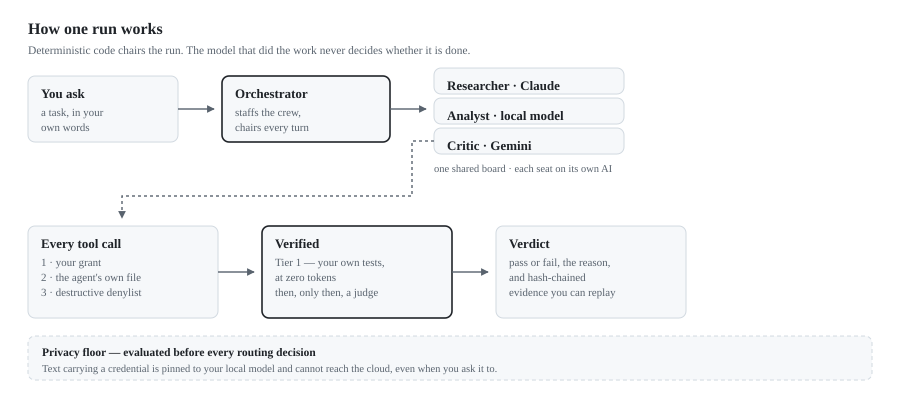

SC Prism · macOS · solo alpha
Many agents, many models, one shared board — and a record of exactly what each one did. Deterministic code chairs every run; a model never controls models. Your own tests decide what counts as done, not the model that did the work.
Free · notarised · macOS 14+ on Apple Silicon. Bring your own AI: a Claude or ChatGPT subscription, API keys, or a local model server. Ships with no keys and phones home to nobody.
Not "AI is unreliable" — something narrower and more annoying.
Give an AI a real job and it works for a while, then tells you it's done. Sometimes it is. Sometimes it wrote a file that doesn't compile, cited a page it never opened, or quietly skipped the hard part. Telling the difference means redoing the work yourself, which defeats the point.
SC Prism is built on the opposite arrangement: the model doesn't get to decide when it's finished.
Five stages, and a floor that is checked before any of them route.

Each one is a constraint the code actually enforces.
Deterministic code chairs every multi-agent run. Agents contribute; the machinery decides whose turn it is.
Your tests and build run first, at zero tokens. When there's nothing to compile it says "skipped — nothing was checked" rather than showing a tick it didn't earn.
Text carrying a credential is pinned to your local model and cannot reach the cloud — even when you explicitly ask for cloud.
Agents, skills, projects and verdicts are plain markdown in one folder. Readable in Obsidian, diffable in git, portable anywhere.
Every subsystem is probed against the shipped bundle before release — not mocked, not described. This is the most recent pass, against the build you can download.
| PASS | denylist refuses rm -rf ~ | blocked pre-exec |
| PASS | containment hides the API keys | unreadable |
| PASS | containment blocks self-approval | approvals intact |
| PASS | ordinary commands still run | real work unaffected |
| PASS | web search returns real results | 8 results |
| PASS | vault tools work | vault readable |
| PASS | skills catalog loads | 4 skills loaded |
| PASS | vault recall (full-text) | 3 docs in 35 ms |
| PASS | skill allowed-tools narrows | source untouched |
These passes are the product of finding real failures, not of avoiding them. A partial list of what this discipline caught: an agent whose definition asked for the web was silently denied it; keyless web search returned nothing while looking functional; two concurrent runs could fork the audit chain; a timeout claimed to kill a command's children and didn't; and the evaluation gate returned success whether or not it had blocked. Each is now covered by a test that fails without the fix.
Three layers stand between a model and your machine. Each is described as what it is, not as what would sound best.
Grants. Computer and terminal access are off until you turn them on, and an agent only holds a tool its own definition file declares.
A destructive-command denylist. Every shell command is scanned
before it executes. The list is deliberately narrow — rm -f build/tmp.o
and git push --force-with-lease run normally, because a guard that
blocks ordinary work teaches you to switch it off.
Containment. Commands run where your saved credentials are unreadable and SC Prism's own approval file cannot be rewritten — so a command can't approve itself for future tools.
The containment is a deny-list, not a sandbox. A command still runs as your user: it can read and write your ordinary files, reach the network, and use your installed tools. Verification commands you configure run outside it.
The privacy floor matches words, not meaning. It will not, on its own, recognise an unlabelled API key, an account number or a home address. For work that must never leave the machine, set the dependency dial to Local first.
The third form of an idea, and the dead end that shaped it.
The first attempt put a primary AI in charge of the other AIs. It fails for a reason worth naming: the thing you most need to trust — who decides what, in what order, with what permission — ends up delegated to the least predictable component in the system.
SC Prism inverts that. A deterministic orchestrator controls the models; a model never controls models. Every other property here follows from that one decision.
Vendor-neutral by construction — the direct answer to lock-in.
Agents to external tools and services.
Agents to each other.
Your vault to any consumer.
Reusable procedures to any agent.
A skill written for another tool works here; one written here works elsewhere. Your knowledge and capabilities are portable on day one, not after an export.
A direction, not a promise — and separated from what ships today.
This release is the solo application: one person, one machine, a full crew, on macOS. Designed for and not yet built: cross-platform desktop; a team mode where colleagues run under your governance without ever holding your keys; a governance console for spend, drift and audit; and a training loop that improves local models from recorded verdicts, so capability rises while cost falls.
The architecture already assumes all of it — the engine is Python, the router is Go, the surface is web technology, and the vault is a portable open-format bundle. None of it is load-bearing on macOS. What separates this from a roadmap is the rule the product runs on: a thing is described as built only when it can be demonstrated.
One person, one Mac, full crew.
This release is the solo product. Team mode is in development — the groundwork ships in this build, and member joining arrives in a later release. It's built by a solo founder, and it dogfoods itself: parts of SC Prism's own tooling were built by SC Prism's crew, on the record.